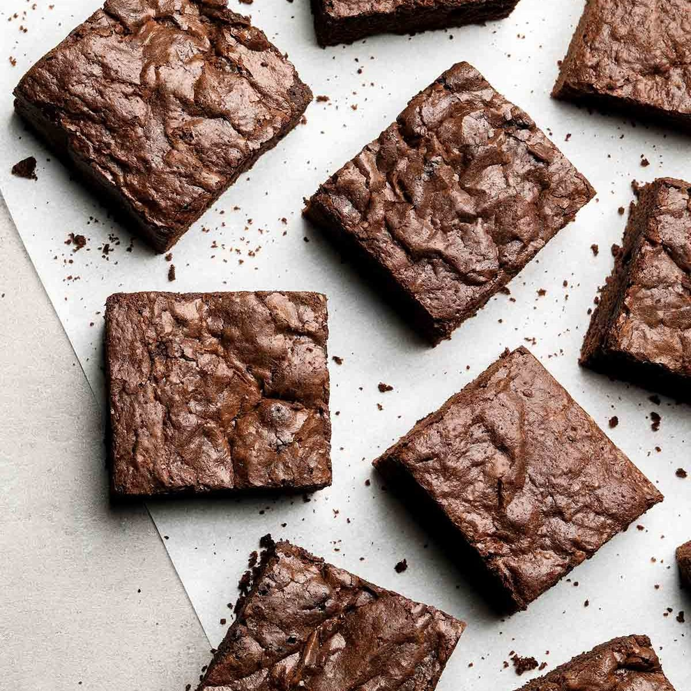

Brownies

Description:
chocolate brownie, or simply a brownie, is a chocolate baked confection.
Brownies come in a variety of forms and may be either fudgy or cakey, depending on their density.
Brownies often, but not always, have a glossy "skin" on their upper crust.
This brownie recipe will leave you with the BEST chocolatey and Chewy brownies
that will only take you One bowl and can be made in less than 1 hour!
Ingredients:
- 5 tablespoons (71 grams) unsalted butter
- 1 1/4 cups (249 grams) granulated sugar
- 2 large eggs plus 1 egg yolk, cold
- 1 teaspoon vanilla extract
- 1/3 cup vegetable oil
- 3/4 cup (75 grams) unsweetened cocoa powder
- 1/2 cup (63 grams) all-purpose flour
- 1/8 teaspoon baking soda
- 1 tablespoon cornstarch
- 1/4 teaspoon salt
- 3/4 cup (128 grams) semisweet chocolate chips
Steps:
- Preheat the oven to 325°F. Line a 8 by 8-inch pan with foil or parchment paper and spray with nonstick cooking spray.
- In a microwave safe bowl, add the butter and sugar. Microwave for about 1 minute, or until the butter is melted. Whisk in the eggs, egg yolk, and vanilla. Stir in the oil and cocoa powder.
- With a rubber spatula, stir in the flour, baking soda, cornstarch, and salt until combined. Stir in the chocolate chips.
- Spread the brownie batter evenly into the prepared pan. Place in the oven and bake for 30 minutes, or until the brownies are set and a cake tester inserted into the center has moist crumbs attached. Do not overcook. Let cool completely before cutting and serving.
Return to main menu